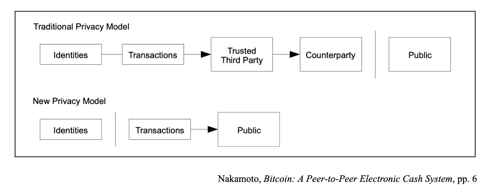

Spring '23 semester project for Advanced Video Production at Wellesley College on the regulation of 3d printing and artificial intelligence.
More work:
PRC Boston 2023 Student Show
My photograph, 500 Feet Away (2023), was featured in the Photographic Resource Center 2023 Student Show hosted by the Panopticon Gallery in Boston. Click the image below to view a larger version!

Adobe Photoshop
Mapshots
Mobile prototype made in Figma focused on creating spatial memory through visual media and text-based posts for past, present, and future Wellesley College students.

Figma; mobile ui/ux design; usability testing
Orwellian Industries: The Simulator
Unity 2D Game; Slack off at work with Orwellian Industries: The Simulator!

Unity 2D; C#; ui design; original asset creation in Adobe Photoshop
The Utopian Possibility of Web3: Creating Community through the Blockchain
Final paper for Literary Theory
crypto; decentralization; blockchain